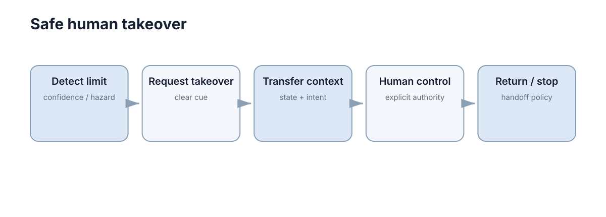

Intervention & Takeover
接管不是一个按钮，而是一段检测风险 → 告警 → 交接状态 → 人获得控制 → 系统降级或恢复的状态迁移。真正危险的往往不是“没有接管功能”，而是接管发生得太晚或边界不清。

这段过程有时间预算，而预算几乎总比设计者预期的短：人的理解时间通常以秒计，而系统的安全窗口往往以秒甚至更短计。接管设计的核心工作就是把这两者对上，对不上时依靠自动降级兜底。下面把这件事拆成状态、时间、信息、切换、降级、恢复和度量七个可验证的问题。
接管为什么是一个状态迁移问题
接管不是二元事件，而是一个由离散状态与有向边构成的迁移系统。把系统在任一时刻的接管相关状态记为
其中 \(\mathrm{Auto}\) 表示自动控制完全有效，\(\mathrm{Requested}\) 表示已告警但控制权仍在系统，\(\mathrm{Handover}\) 表示模式正在切换，\(\mathrm{Human}\) 表示人已接管，\(\mathrm{Degraded}\) 表示安全层接管（减速或停车），\(\mathrm{Recovered}\) 表示条件满足后交还自动。
迁移系统里真正决定成败的量是每条边的驻留时间。若 \(\mathrm{Requested}\) 状态的平均驻留时间 \(t_r\) 小于人建立情景所需的 \(\tau_h\)，则这次迁移在被执行之前就已经失败。稳态分布可由
给出，其中 \(P\) 是迁移概率矩阵。工程上不需要精确求解 \(\pi\)，但必须检查是否存在不该出现的吸收态：若 \(\mathrm{Degraded}\) 无法回到 \(\mathrm{Auto}\)，系统会永久停在降级模式；若 \(\mathrm{Human}\) 无法退出，人就被迫持续操控。
进入不安全状态的平均时间可用首达时间估计：
它比单步安全概率更能反映长期运行下的真实风险暴露。
| 状态 | 控制权归属 | 典型触发 | 可观测信号 |
|---|---|---|---|
| Auto | 自动 | 正常运行 | 无告警，人工输入为空 |
| Requested | 自动 | 能力下降 | 告警发出、倒计时启动 |
| Handover | 过渡 | 人开始输入 | 输入设备有效、模式位翻转 |
| Human | 人 | 交接完成 | 自动输出幅值归零 |
| Degraded | 安全层 | 超时或高风险 | 速度被限制在安全包络内 |
| Recovered | 自动 | 恢复判据满足 | 告警清除、模式位复位 |
该表最重要的用途是日志可对齐。接管事故复盘时团队常因缺少状态标签而无法判断“人到底有没有真正接管”；只要每个状态都绑定一个可观测信号，一次失败就能被定位到具体那条边。
失败模式方面，最常见的是 \(\mathrm{Requested} \to \mathrm{Handover}\) 这条边缺失——人开始输入，但模式并未切换；其次是 \(\mathrm{Human} \to \mathrm{Recovered}\) 边被跳过——系统在人尚未稳定操控时抢回控制。
| 失败模式 | 根因 | 先检查什么 |
|---|---|---|
| 告警后无任何状态变化 | 迁移条件依赖未定义变量 | 状态机守卫条件与默认分支 |
| 状态在两个值间抖动 | 阈值无迟滞 | 引入滞环与最小驻留时间 |
| 降级后无法回到自动 | 恢复边被判据永久阻断 | 恢复判据是否可满足 |
| 日志无法定位接管时刻 | 缺少状态标签 | 为每个状态绑定信号 |
系统应该在完全失控以前发出接管请求
如果定位已经彻底丢失才请求人工接管，人可能来不及理解场景。更合理的是设置分级预警：能力下降但仍可控时就提示，真正越过安全阈值时自动进入减速或停车。设能力剩余度为
其中 \(\hat{x}\) 是状态估计，\(x_{\text{des}}\) 是期望轨迹。当 \(c(t)\) 低于第一阈值 \(c_1\) 时进入提醒，低于第二阈值 \(c_2\) 时进入降级。
选择 \(c_1, c_2\) 的原则不是“告警越早越好”，而是让告警提前量刚好覆盖理解时间 \(\tau_h\)，否则会诱发告警疲劳。可用平均无害告警间隔刻画这一权衡：
该值过低意味着人会把告警当作噪声并在真实请求时忽略它。
| 分级 | 触发条件 | 系统动作 | 人的期望动作 |
|---|---|---|---|
| 提示 | \(c\) 高但趋势下降 | 高亮状态、记录 | 提高注意力 |
| 预警 | \(c\) 落入中间带 | 明确告警、给出接管建议 | 准备接管 |
| 请求 | \(c\) 低于 \(c_2\) | 请求接管、启动倒计时 | 立即接管 |
| 强制 | 超时未响应 | 自动减速或停车 | 无需动作 |
| 恢复 | 条件满足 | 交还自动控制 | 确认恢复 |
阈值设得过宽，人习惯性忽略告警；设得过窄，人刚到临界就被反复打断，长期监督负荷升高。因此噪声率与漏报率必须同时进入验收指标，而不能只看“告警是否及时”。
| 现象 | 最可能原因 | 先验证什么 |
|---|---|---|
| 告警频繁但无后续动作 | 阈值过松 | 统计 MTBFW 与利用率 |
| 告警发生后仍来不及反应 | 阈值过紧或提前量不足 | 对比 \(T_{\text{warn}}\) 与 \(\tau_h\) |
| 趋势下降未被利用 | 只用瞬时值分级 | 引入变化率或预测剩余时间 |
预警阈值与接管时间预算
接管能否成功，取决于“从告警到人真正掌控”的时间是否小于“系统还能保持可控”的时间。设人的理解时间为 \(\tau_h\)（含情景理解与动作反应）、自动降级所需时间为 \(\tau_m\)，则可用告警窗口应满足
其中 \(T_\text{safe}\) 是从当前状态到不可逆后果的时间。
| 场景 | \(T_\text{safe}\) 量级 | 可用策略 |
|---|---|---|
| 中速行驶遇静态障碍 | 2–5 s | 提前告警 + 人接管可行 |
| 高速突发障碍 | < 1 s | 只能自动紧急制动，人工接管不可行 |
| 感知逐渐退化 | 数十秒 | 可利用告警窗口从容交接 |
| 通信中断 | 不定 | 必须依赖本地自动降级 |
这张表说明一个常被忽视的结论：不是所有场景都适合人来接管。当 \(T_\text{safe}\) 小于 \(\tau_h\) 时，把接管请求发给人只会分散注意力；此时正确做法是自动执行安全动作，并把情况作为事后报告给人。
进一步地，可把时间预算写成显式不等式约束用于验收：若某场景测得的恢复时间 \(T_{\text{rec}}\) 满足 \(T_{\text{rec}} \ge T_\text{safe}\)，则该场景不允许把人工接管列为安全手段。
| 预算项 | 符号 | 典型量级 | 压缩手段 |
|---|---|---|---|
| 告警感知 | \(t_{\text{req}}\) | 0.2–1 s | 多通道提示、分级 |
| 情景理解 | \(\tau_h\) | 1–5 s | 状态清单前置呈现 |
| 模式切换 | \(t_{\text{shift}}\) | 0.1–0.5 s | 预置控制权、去抖动 |
| 稳定操控 | \(t_{\text{stab}}\) | 0.5–2 s | 平滑过渡与辅助 |
剩余安全裕量可以显式写为 \(M = T_\text{safe} - T_{\text{rec}}\)，验收标准是 \(M > 0\) 且在设计工况下留有可声明的最小值。
接管前必须把关键状态交给人
操作者需要知道当前速度、位置、障碍、任务目标、系统故障原因和自动控制最后准备做什么。没有上下文的“请立即接管”只是把风险从系统转移给人。
人在接管瞬间实际要完成的是一个部分可观测决策：他要从界面给出的观测 \(o\) 推断真实状态 \(x\)，再选择动作。若信息集合 \(o\) 不足以区分关键假设，最优策略也会出错，即
因此提高交接质量等价于降低条件熵 \(H(x \mid o)\)，而不是增加界面上信息的总量。
| 信息维度 | 需要覆盖的内容 | 与决策的关系 |
|---|---|---|
| 运动学 | 速度、方向、加速度 | 决定可行动作集合 |
| 环境 | 最近障碍距离与方位 | 决定停止还是绕行 |
| 任务 | 目标与约束 | 决定干预方向是否正确 |
| 系统 | 故障原因与模式 | 决定是否信任自动输出 |
| 意图 | 自动系统下一步打算 | 决定是否需要干预 |
信息并非越多越好。界面带宽有限，人的处理速率近似受 \(R_{\text{human}} \approx 5\text{–}10\ \text{bit/s}\) 约束，超出后关键项反而被稀释，因此应当只保留与当前决策强相关的量。
失败模式：信息以仪表盘全量呈现，但缺少优先级排序，导致操作者把时间花在无关读数上；或信息更新延迟，操作者基于过期状态做动作。 另一个常见错误是把“解释”当成信息罗列：操作者需要的是当前该做什么，而不是系统的完整内部状态。 衡量方式就是在演练中测量“告警到首次正确动作”的时间，若加入某组信息后该时间没有下降，说明它挤占了注意力而非帮助理解。 这提示交接界面应当是可裁剪的，随场景类型只展示与当前决策强相关的量。
交接状态清单与信息充分性
交接的核心是“在最短时间内让人建立正确情景”。可以把信息按必要性分层，并用一个加权的充分性分数检查它是否够用：
其中 \(x_i\) 表示第 \(i\) 项信息在该类场景下是否被有效呈现，\(w_i\) 按其缺失后果的严重程度取值。
| 优先级 | 信息项 | 作用 | 缺失后果 |
|---|---|---|---|
| 必须 | 当前速度、运动方向、障碍距离 | 决定立即动作 | 无法判断该停还是该动 |
| 必须 | 当前控制模式与自动系统状态 | 决定输入是否生效 | 出现双方抢控制 |
| 必须 | 系统为何请求接管 | 决定干预方向 | 可能按错误假设操作 |
| 重要 | 剩余任务目标与约束 | 决定后续规划 | 动作方向对但目标已错 |
| 重要 | 最近一次自动动作 | 帮助判断系统意图 | 需要额外时间重建情景 |
清单的价值在于可被验证：通过演练测量操作者从收到告警到首次正确动作的时间，就能判断清单是否真的“够用”，而不是凭设计者主观估计。一个可用的判据是：若加入某信息项后 \(\tau_h\) 不再显著下降，则该项对当前场景已属冗余。
| 现象 | 最可能原因 | 先验证什么 |
|---|---|---|
| 操作者问了系统已经显示的信息 | 呈现位置不显眼或过载 | 视觉层级与更新频率 |
| 首次动作方向错误 | 故障原因未交代 | 原因字段覆盖率 |
| 交接时间随场景剧烈波动 | 清单未按场景裁剪 | 分场景维护必需项子集 |
因此清单不应当是静态文档，而应随场景类型维护多个子集，并在演练中用 \(\tau_h\) 的下降幅度做删减依据。
控制权切换必须可确认
系统发出接管请求不等于人已经成功接管。界面应确认输入设备有效、控制模式已经切换、自动控制是否停止输出。否则可能出现人和机器同时控制，或双方都以为对方在控制。
把控制权看作一组二元变量 \(u_k \in \{0,1\}\)——\(u_k=1\) 表示第 \(k\) 个控制源的输入进入执行链——则任何时刻都必须满足唯一性：
第二个条件排除了切换抖动：即便唯一性成立，高频来回切换也会让执行器收到互相矛盾的指令。
| 切换状态 | 判据 | 风险 |
|---|---|---|
| 未接管 | 自动控制仍输出，人输入被忽略 | 人以为已接管却无效 |
| 部分接管 | 双方同时输出 | 指令冲突、行为不可预测 |
| 已接管 | 自动控制停止，仅安全层保留 | 需要明确边界 |
| 已交还 | 自动控制恢复，人输入被忽略 | 人未察觉，仍以为在控制 |
最危险的是“未接管”与“已交还”这两端——它们都表现为人的输入无效但人不知道。因此模式状态必须是持续可见的，而不是只在切换瞬间提示。
可用的实现手段是为切换引入迟滞与最小驻留时间：
其中 \(h\) 是迟滞带宽。这样既能避免抖动，又能让切换过程在日志中呈现为清晰的单次事件。
安全降级应独立于人工响应速度
人可能没有及时操作，因此系统仍需要 fallback：减速、保持姿态、停车或进入安全区域。人工接管是重要恢复路径，但不应成为唯一安全机制。
把人对告警的有效响应看作成功概率 \(p_h\)，自动降级成功概率为 \(p_m\)，则系统整体保持安全的概率为
而非 \(p_h\)。只要 \(p_m \to 1\) 且两条路径近似独立，即使 \(p_h\) 不高，系统仍然安全。这一点可以量化地说明为什么人机混合方案优于纯人工方案。
| 设计 | \(p_h\) | \(p_m\) | 结论 |
|---|---|---|---|
| 只靠人工接管 | 0.8 | — | 约 20% 场景无人兜底，不可接受 |
| 只靠自动降级 | — | 0.95 | 可接受，但缺乏灵活性 |
| 人工 + 自动兜底 | 0.8 | 0.95 | \(P_{\text{safe}} \approx 0.99\)，推荐 |
这也解释了为什么接管不能算作“安全机制”：它是恢复路径。安全机制必须能在无人响应时仍然生效，其触发不依赖人的状态。
| 现象 | 最可能原因 | 先验证什么 |
|---|---|---|
| 降级需要人确认 | 安全动作被设为交互步骤 | 是否存在无人分支 |
| 只覆盖单一故障 | 降级策略绑定特定原因 | 故障类型覆盖表 |
| 降级后仍越界 | 安全包络与实际动力学不符 | 包络参数与制动距离 |
只要二者近似独立，\(P_{\text{safe}}\) 就由兜底路径主导，这正是把降级动作放在人之外的原因。
恢复自动模式也需要条件
故障短暂消失后不应立即抢回控制。恢复前至少应确认定位、感知、通信和执行器重新达到要求，并明确由谁触发切换。为避免传感器抖动引起模式反复，需要引入保持时间：
只有误差在阈值内连续保持足够长，才允许发出恢复请求。
| 恢复条件 | 判据 | 建议 |
|---|---|---|
| 关键传感器 | 连续正常时长超过阈值 | 避免抖动期立即恢复 |
| 定位质量 | 协方差回到阈值内并保持 | 与安全余量计算一致 |
| 任务环境 | 不在高动态或遮挡区 | 选择可预测场景恢复 |
| 触发方 | 明确由人触发或自动触发 | 高风险系统建议人工确认 |
过早恢复会导致再次降级，形成“恢复—降级”振荡，使操作者无法预测系统行为；恢复后若控制律直接从人工状态切到自动状态，还会产生瞬态冲击。切换应经过一段平滑过渡，例如在 \(T_{\text{blend}}\) 内线性混合两侧指令。
| 现象 | 最可能原因 | 先验证什么 |
|---|---|---|
| 反复恢复又降级 | 保持时间过短 | 抖动频率与 \(T_{\text{hold}}\) |
| 恢复瞬间明显抖动 | 无平滑过渡 | 混合时长与控制增量 |
| 无人知道谁触发恢复 | 触发方未定义 | 权限与确认流程 |
因此恢复判据应当写成可执行的条件表达式，并记录每次判定所依据的量，而不是依赖操作者的主观判断。 在验证时还要检查恢复过程中的稳定裕度，避免交接瞬间的控制量跳变本身触发新的告警。
接管是一个有时序的协议
接管包含请求、理解、确认、控制权转移和稳定操控多个阶段。只测量人按下按钮的时间会低估真正的恢复时间。验证时应从首次告警计时，直到系统重新进入可控状态，并覆盖人没有及时响应的分支。
总恢复时间可分解为各阶段之和：
其中每一项都可能成为瓶颈，且它们不是独立可优化的——缩短 \(\tau_h\) 往往需要更多前置信息，而这又会增加 \(t_{\text{req}}\) 的显示延迟。
| 阶段 | 起止 | 可测量量 | 常见失败 |
|---|---|---|---|
| 请求 | 告警发出 | 告警是否被感知 | 提示被忽略或延迟显示 |
| 理解 | 告警→首次动作 | 理解时间 | 信息不足，动作方向错 |
| 确认 | 动作→控制权转移 | 转移延迟 | 模式未真正切换 |
| 稳定 | 转移→可控状态 | 稳定时间 | 切换瞬态引起振荡 |
| 恢复 | 可控→自动恢复 | 恢复判据满足时间 | 过早恢复再次降级 |
把接管当作协议而不是按钮，直接改变了测试设计：需要为每个阶段单独定义通过标准，而不是笼统记录“接管是否成功”。同时每个阶段都应记录触发起止时间戳，使 \(T_{\text{rec}}\) 可逐项归因。
| 阶段 | 通过标准示例 | 数据来源 |
|---|---|---|
| 请求 | 告警在 \(0.5\tau_h\) 内被感知 | 视线/操作日志 |
| 理解 | 首次动作方向正确 | 输入序列标签 |
| 确认 | 模式位翻转且唯一性成立 | 状态机日志 |
| 稳定 | 误差回到包络内 | 状态估计序列 |
接管成功率的度量与演练设计
接管能力必须被测量，否则只是界面上的一个按钮。可用的指标如下：
| 指标 | 定义 | 目标方向 |
|---|---|---|
| 告警提前量 | 从告警到不可逆后果的时间 | 越大越好 |
| 理解时间 | 告警到操作者首次正确动作 | 越小越好 |
| 交接完整性 | 关键状态清单的展示覆盖率 | 越高越好 |
| 接管成功率 | 成功恢复可控状态的比例 | 越高越好 |
| 无人响应分支 | 未及时接管时是否安全降级 | 必须成立 |
把前两项合起来可以给出一个可验收的成功概率估计：
由于样本有限，该估计的置信下界同样重要，可用二项分布的 Wilson 区间给出 \(\hat{p}_{\text{succ}}\) 的下界，再用它对照验收门限，而不是用点估计。
演练必须覆盖“人没有及时响应”这一分支，因为它是所有安全论证里最容易被默认跳过的情形，而现实中却经常发生。
| 演练场景 | 目标 | 失败即说明 |
|---|---|---|
| 定位突然失效 | 检查降级是否独立生效 | 无人分支不成立 |
| 障碍突然出现 | 检查 \(T_\text{safe} < \tau_h\) 的处理 | 仍把接管当安全机制 |
| 通信中断 | 检查本地兜底 | 安全动作依赖远端 |
| 告警无人响应 | 检查超时后行为 | 无强制降级 |
接管记录应该用于后续改进
每次接管都包含宝贵的“系统能力边界”信息。记录触发原因、接管前状态和人工操作，可以用于重新设计阈值、补充训练数据和验证恢复策略。
如果把接管看作一次风险被避免的抽样事件，其发生率 \(\lambda_t\) 本身就是度量：
它可以直接用于检验阈值是否过松（\(\lambda_t\) 偏高说明请求过早或过频）或过紧（长期 \(\lambda_t \to 0\) 反而说明潜在问题未被暴露）。
| 记录字段 | 用途 | 不给后的代价 |
|---|---|---|
| 触发原因 | 定位能力边界 | 无法复现同类问题 |
| 接管前状态 | 评估阈值合理性 | 无法判断是否可预警 |
| 人的动作序列 | 评估界面充分性 | 无法改进交接清单 |
| 恢复过程 | 验证恢复判据 | 可能重复过早恢复 |
更细的用法是把每次接管转成一条可用于改进的数据：若接管由同一类故障反复触发，说明该故障应被纳入自动处理；若接管后人的动作与系统建议方向相反，说明交接信息或解释策略需要修正。长期看，接管频率随里程的变化曲线还能反映系统能力是否在真实提升。 记录的价值还有一层：它为“阈值是否该调整”提供了实证依据，而不是靠主观感觉反复改参数。 只要每条记录都带有可对齐的状态标签与时间戳，一次接管就能同时改进告警策略、交接清单与恢复判据。 这也是把接管当成数据来源而非事故记录的意义所在。
因此人工接管也需要像故障恢复一样定期测试，而不是只在界面保留一个按钮。接管机制若从未被真正触发测试，往往会在事故时刻暴露模式切换、输入设备或权限问题。
下一步：本章给出控制权转移的时序与度量，Interaction & Levels of Automation 界定控制权归属，Human-in-the-Loop 说明人插在哪一环，Shared Autonomy 处理连续融合，Trust & Explainability 保证操作者能正确理解系统状态。自动降级与运行时监控见 Safe Learning & Runtime Safety，安全约束与延迟预算见 Safety Constraints，与之衔接的导航控制接口见 Navigation & Control。